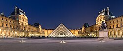
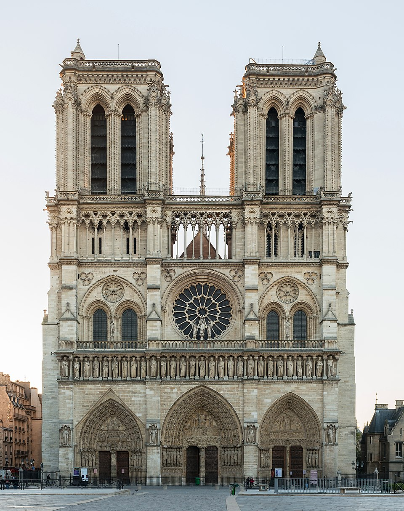

Paryż
Paryż Nowy Jork Rzym

stolica i najludniejsze miasto Francji, a także departament (nr 75), w regionie Île-de-France. Położone jest w północnej części kraju, w centrum Basenu Paryskiego, nad Sekwaną. Stanowi centrum polityczne, ekonomiczne i kulturalne kraju. Według danych na 1 stycznia 2020 r. w granicach administracyjnych gminy Paryż na obszarze 105,4 km² zamieszkiwało 2 187 271 osób[2], na obszarze Wielkiego Paryża[w innych językach] (Grand Paris)[a] mieszkało 7 086 619 osób na obszarze 814,2 km²[3], w paryskiej jednostce miejskiej Unité urbaine de Paris[w innych językach] mieszkało 10 856 407 osób na obszarze 2846 km²[4], natomiast na obszarze regionu paryskiego Île-de-France mieszkało 12 271 794 osób na obszarze 12 012 km²[5]. Po opuszczeniu Unii Europejskiej przez Wielką Brytanię, Paryż stał się największą metropolią w Unii Europejskiej.

Wieża eiffel'a
Wieżę zbudowano specjalnie na paryską wystawę światową w 1889 roku. Miała upamiętnić setną rocznicę rewolucji francuskiej[1], zademonstrować poziom wiedzy inżynierskiej i możliwości techniczne epoki oraz być symbolem ówczesnej potęgi gospodarczej i naukowo-technicznej Francji. Projekt podkreślał architektoniczne walory stali, wbrew dominującemu w XIX wieku akademizmowi, który uważał żelazo za prosty materiał budowlany. Projekt wykorzystywał doświadczenia epoki i jej konstruktora, Gustave’a Eiffela, w budowie kolejowych mostów stalowych. Po 20 latach budowla miała być rozebrana, lecz Eiffel nie chciał do tego dopuścić i założył na wieży laboratorium aerodynamiczne i meteorologiczne. Jednak dopiero udane eksperymenty (z udziałem Juliana Ochorowicza, wynalazcy i konstruktora) z umieszczonym na szczycie telegrafem „bez drutu” ocaliły wieżę i odstąpiono od jej demontażu. W przededniu I wojny światowej stała się obiektem militarnym: zapewniała Paryżowi łączność z posterunkami wojskowymi na granicy z Niemcami (do tej pory do komunikacji używano gołębi pocztowych). Zachowana budowla z czasem stała się największą atrakcją turystyczną Paryża, którą zwiedziło już ponad 300 milionów ludzi[2].

Luwr
Muzeum znajduje się w Pałacu Luwru (Palais du Louvre) znanym już w średniowieczu. U schyłku XII wieku król Filip II August wzniósł w tym miejscu zamek warowny. W drugiej połowie XIV wieku Karol V Mądry uczynił z zamku rezydencję królewską. W XVI wieku Franciszek I zamienił tę budowlę w monumentalny renesansowy pałac. Autorem barokowej przebudowy pałacu był Jacques Lemercier. W 1672 Ludwik XIV przeprowadził się do Wersalu, natomiast w Luwrze zostawił bogatą kolekcję dzieł sztuki antycznej. W 1692 gmach został siedzibą Académie des Inscriptions et Belles Lettres oraz Académie Royale de Peinture et de Sculpture, w roku 1699 Akademia zorganizowała pierwszy Salon wystawowy. Podczas rewolucji francuskiej 8 września 1793 r. Konwent Narodowy wydał dekret o zamienieniu pałacu w muzeum[1]. Muzeum zostało otwarte 10 sierpnia 1793 r. Ekspozycja liczyła 537 obrazów. Znaczną część stanowiły konfiskaty dóbr kościelnych i królewskich. Ze względu na problemy związane ze stanem budynku muzeum zamknięto na lata 1796–1801. Kampania napoleońska wpłynęła na duży wzrost kolekcji, przy czym większość stanowiły łupy ze zbiorów na terenach podbitych przez Napoleona I Bonaparte, po porażce wojsk dyktatora pod Waterloo dzieła zwrócono prawowitym właścicielom. Za czasów panowania Ludwika XVIII i Karola X oraz Drugiego Cesarstwa nastąpił wzrost kolekcji, która przekroczyła 20 tysięcy dzieł. Kolejny wzrost kolekcji to owoc licznych nabytków muzeum i darów prywatnych kolekcjonerów dzieł sztuki. W 2008 roku zbiory Luwru podzielono na osiem kategorii, każdej z nich przypada odrębny dział. Są to Działy: Starożytnego Egiptu, Starożytnego Bliskiego Wschodu, Starożytnej Grecji, Starożytnego Rzymu, Sztuki Islamu, Rzeźby, Malarstwa, Rzemiosła Artystycznego, Rysunku i Grafiki.
Katedra Notre-Dame

gotycka archikatedra w Paryżu. Jedna z najbardziej znanych katedr na świecie, między innymi dzięki powieści Katedra Marii Panny w Paryżu francuskiego pisarza Victora Hugo. Jej nazwa oznacza Naszą Panią i odnosi się do Marii, Matki Bożej. Wzniesiono ją na wyspie na Sekwanie zwanej Île de la Cité, w 4. dzielnicy Paryża, w miejscu po dwóch kościołach powstałych jeszcze w IX wieku. Jej budowa trwała około 200 lat (1163–1345). Od 10 sierpnia 1806 roku w skarbcu katedry – pod opieką kanoników Kapituły Bazyliki Metropolitalnej – przechowywane były relikwie korony cierniowej[1]. Do 2019 kościół zwiedzało ok. 14 milionów osób rocznie[2]. 15 kwietnia 2019 roku wybuchł pożar, który zniszczył iglicę i cały dach pokrywający nawę, chór i transept. Od tego dnia katedra Notre-Dame była zamknięta dla zwiedzających. W 2020 roku podjęto decyzję o odbudowie zniszczonych lub poważnie uszkodzonych części w identyczny sposób. Uroczyste otwarcie o charakterze świeckim odbyło się 7 grudnia 2024, a pierwsza msza św. celebrowana przez arcybiskupa Paryża Laurenta Ulricha odbyła się dzień później. Także tego dnia w godzinach wieczornych katedra została udostępniona dla wszystkich zwiedzających[3][4].